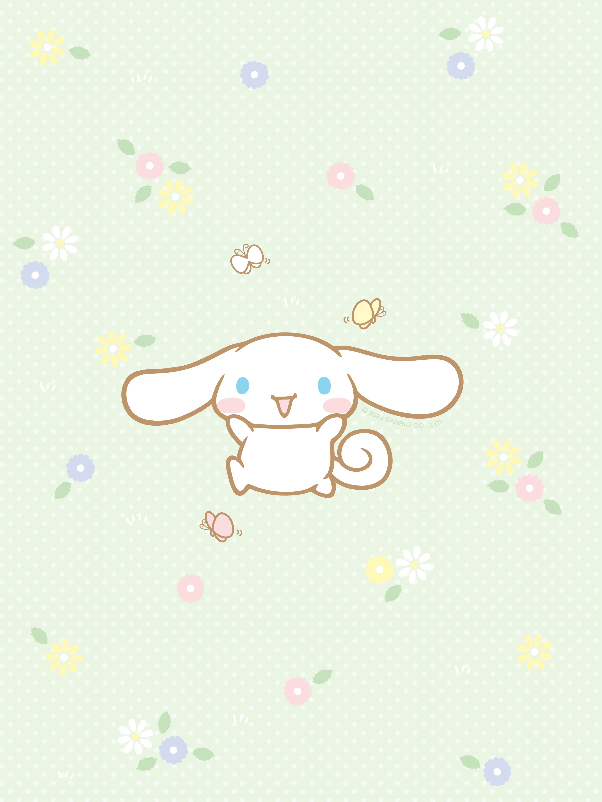

Nuestra Familia
Sanrio es una fmailia muy grande con miles de personajes. A continuación os presentamos a los más conocidos:

Sanrio es una fmailia muy grande con miles de personajes. A continuación os presentamos a los más conocidos:
Hello Kitty tiene muchos gustos y hobbies, entre ellos, lo que más le fascina es aprender inglés y coleccionar pequeñas cosas como caramelos y peces de colores. Su comida favorita es la tarta de manzana hecha por su mamá, Mary Kitty.

Canela o Cinnamoroll es un cachorro blanco y peludo con orejas largas y una cola rizada, y es el líder de una banda llamada ShinganCrimsonZ. Sus compañeros de banda son Crow, Yaiba, Aion y Rom, y juntos interpretan un estilo único de música.
Chococat es el amigo que siempre está informado y sabe de todo. Su característica más marcante es la naricita color de chocolate
Su nombre proviene de la combinación de las palabras japonesas «kuro» que significa «negro» y «mi» que se traduce como «corazón». Kuromi se caracteriza por su actitud un poco más traviesa y por su estilo punk.
Badtz-Maru es uno de los pocos personajes de Sanrio cuyos productos son vendidos tanto a niñas como a niños. Se caracteriza por ser un pingüino de buen corazón, de buena actitud y de carácter bueno y carismático
My Melody es una conejita muy curiosa, pero un poco precipitada a veces. Su mejor amigo es Flat un ratón de piel azul y Piano una oveja blanca que al igual que My Melody usa una capucha rosa.
| Hoy es: | La hora es: | ||